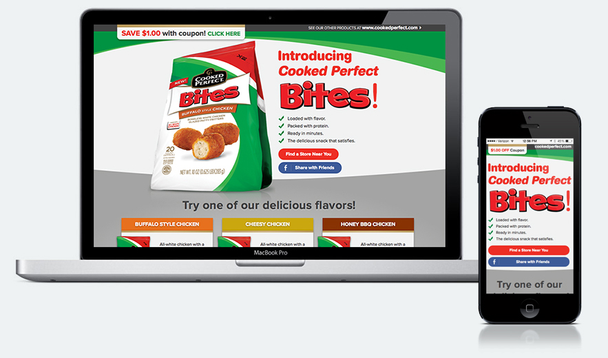

Cooked Perfect Website
-

Project Background
Cooked Perfect tasked our team with creating a consumer facing site focused on increasing brand awareness and building loyalty around their new product, Bites. The absence of brand guidelines was a challenge throughout this project, therefore the product packaging served as the primary visual influence for the look and feel of the site.
Content Hierarchy & Design
The Cooked Perfect team wanted to keep the page simple, highlighting four main components:
- Flavors
- Suggested Dipping Sauces
- Heating Instructions
- $1 off coupon
It was our task to decide how to organize and present this information.
Responsive Page Layout
Given the youthful nature of their audience, it was imperative that the site was fully responsive. We envisioned this audience checking the site on their mobile phones for product-related information such as nutrition facts, heating instructions, and coupons. The page was browser-tested to ensure that users on a variety of devices would have access to all website features.